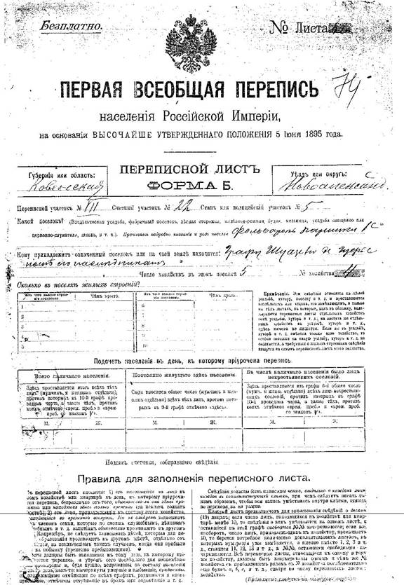

Lithuania 1897 Census Database
Extracts of the Jewish records in the
1897 Russian Census
Translated by the Lithuanian State Historical Archives
Commissioned and donated by
Howard Margol and Peggy Mosinger Freedman
for the
American Fund for Lithuanian-Latvian Jews, Inc.
Names of 13,465 Jewish individuals (2,475 families) residing in
Kovna and Vilna Gubernya, extracted from the first official census of
the Russian Empire. Information includes name, patronymic, age,
relationship to head of household, place of birth, place of residence,
place of registration and some occupations. This material was
translated from the remaining fragments of the original 1897 census
documents which are stored in the Lithuanian State Historical Archives
in Vilnius, Lithuania.
Historical Background
In 1895, the Imperial Russian government began planning a census of the
entire Russian Empire. The actual count of individuals took place
on January 28, 1897. Previously, tax registrations and draft
registrations had been collected, but this census was different —
it was to be used only for statistical purposes.

“The 1897 census had an ambitious intent: to document the entire
population of the Empire and describe its associated characteristics on
a single day. This [odnodnevnaya perepsis] would collect data on age,
gender, literacy, nationality, place of birth, etc., for all residents
irrespective of their social Estate or tax status. . . . Varying
census forms were printed for what were considered the five principle
groups of persons. Form [A] was for peasant households that resided on
agricultural property; Form [B] was for landed Estates; Form [V] for
urban populations; [another form] for the military population; and
[the final form] for boarding students, clergy, wards of charitable
organizations, etc.” (Thomas K. Edlund, “The 1st National
Census of the Russian Empire,” FEEFHS Journal, volume VII,
numbers 3-4, Fall/Winter 1999, Salt Lake City, Utah).
To see an example of these forms, click on the image at the right.
All individuals were listed together, but nationality (including
"Jewish") was identified.
After the census was taken, a second copy of every return was made.
Both copies were sent to the provincial census commission. The
provincial census commission sent one of copy to the central commission
in St. Petersburg. After the central commission tabulated statistical
results, their copy of the information was destroyed. However,
some of the original returns were saved in local and provincial archives.
About this database
This database is a translation of the remaining fragments of the
1897 Census records, extracting only Jewish persons, from Kovno and
Vilna gubernias. Please note that there are many qualifications
in this statement:
- Only records in the Lithuanian State Historical Archives (LVIA) in
Vilnius, Lithuania were examined.
(The JewishGen Latvia SIG has translated some of the 1897 Census records
for Latvia, at
http://www.jewishgen.org/databases/Latvia/AllRussia.htm;
The JewishGen Belarus SIG has translated some of the 1897 Census records
for Grodno gubernia, at
http://www.jewishgen.org/Belarus/intro_1897_russian_census.htm).
- Only Jewish records were translated (the records include data on "religion").
- The majority of the original records were destroyed, and are not available today.
The following table shows the number of individuals (total population and
Jewish population) recorded in the original statistical summary of the
Lithuanian districts, and the number of records in the translated remnants.
As you can see, most records have been lost. All records found in the
Lithuanian State Historical Archives in Vilnius as of November 2002
have been translated for this database.
| Uezd / District |
Gubernia |
Total Population * |
Total # of Jews * |
Jews as a % of Population |
# of Jews in Remaining Records |
# of Jewish Families in Remaining Records |
% of Jewish Records Remaining |
| Kovna (Kaunas) |
Kovno |
227,431 |
45,353 |
20% |
0 |
0 |
0 |
| Vilkomir (Ukmergė) |
Kovno |
229,118 |
30,153 |
13% |
4,291 |
834 |
14% |
| Novo-Alexandrovsk (Zarasai) |
Kovno |
208,487 |
26,463 |
13% |
3,646 |
637 |
14% |
| Ponevezh (Panevėžys) |
Kovno |
222,881 |
27,207 |
12% |
1,397 |
251 |
5% |
| Rossieny (Raseiniai) |
Kovno |
235,362 |
26,447 |
11% |
1,083 |
194 |
4% |
| Telz (Telšiai) |
Kovno |
183,351 |
22,695 |
12% |
607 |
82 |
3% |
| Shavl (Šiauliai) |
Kovno |
237,934 |
34,348 |
14% |
713 |
161 |
2% |
| Kovno Gubernia Total |
1,544,564 |
212,666 |
13.7% |
11,737 |
2,159 |
5.5% |
Vilna (Vilnius)
(not including city of Vilna) |
Vilna |
|
|
|
1,728 |
316 |
|
* From the Statistical Summaries published by the
Imperial Russian government in 1905, available on LDS microfilm.
How this translation was obtained
In 1999, Howard Margol finalized an agreement with the Lithuanian State
Historical Archives in Vilnius, for the Archives to translate the information
from the 1897 census records into English, key the data into a computer, and
send the data to him on diskettes. The entire project was completed
in February 2000. Peggy Freedman helped co-ordinate the data collected
for the project. The translated data was moved from Word documents into
a database, and now, thanks to the JewishGen wizards, is searchable by name,
place, soundex value and keyword.
Howard donated the Word documents for the entire translation of existing
Jewish records from the 1897 census to the Family History Library in Salt Lake
City, Utah. The FHL re-produced this document on microfiche.
The title on the microfiche is "1897 census extracts from Lithuania".
The Family History Library Catalogue (FHLC) description is:
"Filming: 459 exposures on 10 microfiches (105 mm.), GS6001828".
You can order in a copy of the microfiche through your local LDS Family
History Center (FHC). The microfiche ordering number is 6,001,828.
Data Fields
| Town |
If this entry is from Form [V], the name of the town is listed. |
Volost /
District /
Gubernia |
Russian administrative designations on the Census forms.
A volost (county) is a subdivision of an uyezd (district),
which is a subdivision of a gubernia (province).
In this database, the gubernia will be either Kovno
(Kaunas) or Vilna (Vilnius). See list of
districts, below.
|
| Address |
- If information is from Form [A] or Form [B], this is
the name of the rural Estate or Village where the family lived.
- If information is from Form [V], this is the name of the Street
where the family lived. Russian nouns have endings based on their
declension — the street names have been transliterated with
these endings. (i.e. What we would call in English "Kovna Street" is
"Kovenskaia Street").
|
Landowner /
House of |
The name of the person owning the property on which the family
lived. On Estates this is usually the owner of the Estate.
In Villages and Towns, it is often, but not always, the resident.
It is used in place of a street number to identify an address.
If two families lived at the same address, they will both be
displayed if you search for one of them. They may or may not be
related, but we felt that the information that they lived together
was important.
|
| Name |
Surname and Given Name(s) of each individual.
Transliterated from Cyrillic. |
| Age |
Age on the day of the census taking, January 28, 1897.
This census in particular has been criticized by demographers for
"age heaping", the tendency to prefer or avoid certain ages when
taking the reports.
|
| Father |
A patronymic — the father's given name — is part of
the Russian naming convention. Patronymics are usually included
with the individual’s given name and surname, for example
"Peisakh Abramovich Katz" means "Peisakh, son of Abram, surname Katz".
The fathers' given names have been extracted from the patronymic and
put into their own column for this database. |
| Relationship |
Population units were counted by Household, not by individual,
in the Russian Empire in 1897. Usually (but not always),
the Head of Household was the oldest man living in the household.
This column identifies each individual’s relationship to the
Head of Household. |
| Comments |
Any notes made by the census taker. |
| Born / Registered / Living |
Place of Birth, Place of Registration, and Place Living.
These three location columns give some of the most interesting
information in the Census. It was common that a person lived
in one place, but was officially registered in another place.
These columns give an idea of how our ancestors moved, and why we
can’t find them in the places that we expect to find them!
Because many of these locations are so small that they are not included
on the commonly used genealogical lists of places, they are included
in this database just as they were transliterated from the original.
To facilitate research into place names, we have extracted a
list of all place names appearing in this database,
which appears at the bottom of this introduction.
Some unusual terms can appear in these columns:
- Folwark — The name comes from the German word "Vorwerk".
A general meaning of this term is an administrative area where taxes
are collected. Folwarks first appeared as the land was given by
grand dukes to clergy, cloisters and high ranking people.
Sometimes several folwarks are in one village. Folwark may also
mean an area of land that belonged to representatives of nobility.
- Zastenok — (Polish - zascianok).
In Poland (Polesye and Volyn) the name means a piece of land that was
adjacent to, but not part of, a village.
It was separated from a village's land by a natural border; forest,
mountain, swamp, etc. Every resident of the village could use
the land of the zastenok, but he had to pay money for the use of the
land. In Lithuania, zastenok means an area of land that was
settled by lower ranking nobility.
The family worked on the land by themselves.
- Korchma — This was a tavern.
In many places, the tavern was a kosher bed and breakfast,
catering to Jews who were traveling.
The sale of wine and spirits to the general public was also a
function of the Korchma. In some Korchmas, only the sale
of wine and spirits was involved.
- Estate — In many instances, a Jewish family
lived on an Estate rather than in a city or village.
Generally speaking, the head of the family worked for the owner
of the Estate as a blacksmith, bookkeeper, manager, or in some
other capacity.
|
| Source |
The archive, fond, series, and file number of the
original record.
All of these records are from the Lithuanian
State Historical Archives in Vilnius
("LVIA" = Lietuvos Valstybės Istorijos Archyvas).
For example, "LVIA / 768 / 1 / 54" indicates that this
record is from the Lithuanian State Historical Archives (LVIA),
fond (record group) number 768, series 1, file 54.
|
Where can I obtain more information about persons
appearing on this database?
If you do find your ancestors or relatives in this database, and you
would like to receive a photocopy of the original census page that they
are listed on, you can write to the Lithuanian State Historical Archives
at:
Lietuvos Valstybės Istorijos Archyvas
Gerosios Vilties 16
2009 Vilnius
Lithuania
For a nominal fee, they will send you a copy.
You must send them your ancestral information contained in this database,
together with the Source (the fond, series, and file number), so that
no research would be required.
The original record is handwritten in Russian (Cyrillic alphabet).
Bibliography
- Bangsberg, Tara.
“The Russian Index: Russian Census Returns, A Tutorial”.
(Puyallup, WA : Privately published, 1993).
LDS Family History Library, Salt Lake City, microfilm #1,183,690 Item 1.
- Clem, Ralph S.
Research Guide to the Russian and Soviet Censuses.
Cornell University Press, Ithaca, NY, 1986.
- Edlund, Thomas K.
“The 1st National Census of the Russian Empire”,
FEEFHS Journal, volume VII, numbers 3-4, Fall/Winter 1999,
pages 88-97.
- Edlund, Thomas K.
“The Russian National Census of 1897”,
Avotaynu. XVI:3 (Fall 2000), pages 29-39.
- Margol, Howard with Freedman, Peggy.
“The 1897 All-Empire Russian Census”,
Avotaynu. XVIII:3 (Fall 2002), pages 23-24.
- Mehr, Kahlile. “Russian Genealogy Primer”,
Everton's Genealogical Helper. September/October 1999, pages 50-54.
- Tsentral'niyi statisticheskii komitet (Central Statistical Committee).
Pervaia vseobshchaia perepis naseleniia Rossiiskoi imperii, 1897 g.
(Statistical summaries of the first complete census of the population
of the Russian Empire, 1897). Washington DC: Library of Congress, 1977.
microfilm.
- Shea, Jonathan D., and William F. Hoffman.
In Their Words: A Genealogist's Translation Guide to Polish,
German, Latin, and Russian Documents. Volume II: Russian.
(New Britain, CT: Language & Lineage Press,
2002). pages 320-328.
Place Names appearing in this Database
There appear to be duplicates based on different transliterations of
the same word. But just as there is a Rome, Georgia; a Rome, New York;
and a Rome, Italy; there may be duplicate names of places in the Russian
Empire. We have documented three towns called colloquially "Ponemon"
in Lithuania: two in Novo-Aleksandrovsk district and one in Suwałki
district. We have tried to err on the side of over-inclusion,
instead of arbitrarily combining places when we are not certain if
they are the same.
- Towns:
Akmene, Anyksciai, Debeikiai, Gargzdai, Jurbarkas, Kelme, Konstantinova,
Kupiskis, Kvetkai, Michaliskes, New Zagare, Pasvalys, Pumpenai, Rietavas,
Rokiskis, Salakas, Salociai, Skapiskis, Skuodas, Taurage, Tauragnai,
Utena, Vidzia, Vilkomir.
- Volosts (Counties):
Akmene, Alsedziaia / Olsiady, Andronishki, Anyksciai, Debeikiai, Gorgzhdy,
Iurburg, Kelme, Kibury, Konstantinovo, Kvetkai, Labardziai, Michaliskes,
Mickunai, New Zagare, Obeliai, Oloty', Opsy', Paberze, Pandelys, Papile,
Papili, Pasvalys, Pogiry(Pagiriai), Ponemon, Pumpenai, Redutka, Remigola,
Rietavas, Rokiskis, Salakas, Salociai, Sartininkai, Seda, Sirvintos,
Skapiskis, Skrebotiskis, Skudutiskis, Skuodas, Taurage, Tauragnai, Utena,
Varnenai, Vaskai, Vekshny, Vidzia, Vilkomir, Vizhuny.
- Estates, Villages and Miscellany:
"Ugol" Survilinski, Aiasuginy II Zastenok, Alsedziai-water-mill, Alsiai Village,
Antsyshki Estate, Azhubale Village, Banishki (Village or Estate), Barklaini
Village, Beriozovka Village, Blagodat or Vizhunelki (Village or Estate), Bobordze
Village, Bolniki Village, Boreishy (Village or Estate), Breviki-water-mill,
Budreiki (Village or Estate), Budryki (Village or Estate), Butmanishki Zastenok,
Chekantsy Village, Chernishki Village, Debekantsy Village (vyselok), Deguliai
Estate, Dobule Estate, Dymshyshki Folvark, Dzirmuny Village, French mill, Gelazy
Village, Gerviaty Estate, Gerviaty Village, Gerviaty, mill, Gikanai Village,
Gimogiry (Village or Estate), Glinianka Village, Gotaine Village, Goza Village,
Grigale Kropinia Village (vyselok), Grikogtele Village, Gudzeniki Mill, Gvozdika
Korchma (tavern), Iamontsy (Village or Estate), Iarishki Village, Iasmildy
Village, Iatsyny Village, In the school garden (Shkolni Dvor), Indrobka 2
zastenok, Indrobki Village, Iotaineli Village, Izabeliny (Village or Estate),
Jasonys Village, Jodelunga Zastenok, Kalamets Village (vyselok), Kalieki (Village
or Estate), Katenki, zastenok, Kavlinishki (Village or Estate), Kazatchizna
Estate, Keidy Village, Keli Village, Kelma Korcma (Tavern), Kemuny Village,
Keskishki Village, Ketraki Folvark, Kibury Estate, Kirov Estate, Kivili Village,
Komiany Korchma (Tavern), Kopeitsi Village, Korchma (tavern), Korchma (Tavern)
Rabbi, Kosse Skrobitski Village, Krasovka 2, zastenok, Kuchkurishki settlement,
Kudra Folvark, Kukuchi Village, Kurkletzkoye Village, Kurkletzy Village,
Kurkliai-Antoezerone Village, Kushleikishki Village, Kutniany Village,
Kvykliai Village, Laveshevo Zastenok, Leliuny Village, Leonishki Village,
Lezetzki Estate, Liaskovka Korchma (tavern), Liguny Estate, Linkishki Village,
Lipsk Estate, Lotovo (Village or Estate), Magazinki Folvark, Malange Village,
Mange Estate, Markuny, Village owners Estate, Martsynishki Korchma (tavern),
Matekhi Village, Matseiuntsi Village,
Meiluny Estate, Melgidze Village, Merchant's house ("khata") Viple,
Michany Estate, Miliuny Village / Belaya Korczma Zastenok, Mitskuny Estate,
Mokiany Village (okolitsa), Mozeiki Village, Muravanka Village, Nerteiki, Estate,
Novaia Postinka, Novaia Postinka suburb, Novocady Village, Novosady Village,
Oloty' Village, Osinovka Folvark, Ostrovets Estate, Pakalna Village, Pakalniai
Village, Paketse Estate, Papishki 1c Folvark, Papshy housing Estate, Parkhuvka
Estate, Pekishki Korchma (Tavern), Pelishki Estate, Peskishki Village, Pezy,
Planki Village, Plebantsy Village, Pob Andronishki, Pobkalne Estate, Pod
Andronishki, Podyrmishki folvark, Estate Dubiany, Pogrundzy Village, Pogulianka
zastenok, Pokopine Zastenok, Popelali (Village or Estate), Povary Folvark,
Prapultine Estate, Pumple Village, Pushkarnia, factory, Pustynka Estate, Radeikiai
Village, Radziuliany Village, Rashkovshchizna Estate, Ripine Village, Robert
Simon(?) Estate, Rodiuliar Village, Rokantiski Village, Romanovshchizna Folvark,
Romashkantsy Zastenok, Rovnoe pole, zastenok, Rovnoie pole, zastenok, Rurishki
Village, Rykhlishki Village, Rymddziuny Korchma (tavern), Rynki Zastenok, Sabany,
Sadelishki Village, Salakas Village Community, Seda Village, Shakali Village,
Shamony Estate, Shileiki Estate, Shkolni Dvor, Shunebude Zastenok, Silgishki
Village, Sirvinty Village, Skrabastiskis, Estate, Skrebishki (Village or Estate),
Skrobitzki Folvark, Skudutiskis Village, Slobodka Village, Smoliarki Folvark,
Sodolishki Village, Staraia Postinka, Stebiaki Village, Sterkanski "ugol", Svidze
Estate, Tavkiuny Village, Tsady 2, Tsegelishki, Estate, Tsengelishki, Estate,
Tsorny Estate, Tsygodka Folvark, Untupe Village, Vainutas Village, Vaishnorovcy
Village, Vartachi zastenok, Vengelishki Estate, Verbi Village, Vershubka Korchma
(tavern), Versuba, mill in the Estate, Verzhovka Zastenok, Vileika Village,
Villki Village, Vitsiuni Village, Vodopoi, korchma near vil. Rekantsiski, Voitshki
zastenok, Vsisviatskaia Village, Vygodka Village, Zeibagoly (Liuny) folvark,
Zheimeli Estate, Zhezdry Village, Zurkletze Estate, Zverinets (Forest house),
Zvirbliany folvark.
Search the Database
The Lithuania 1897 Census Database can be searched via the
JewishGen Lithaunia Database.
Last Update: 10 Dec 2012 MT